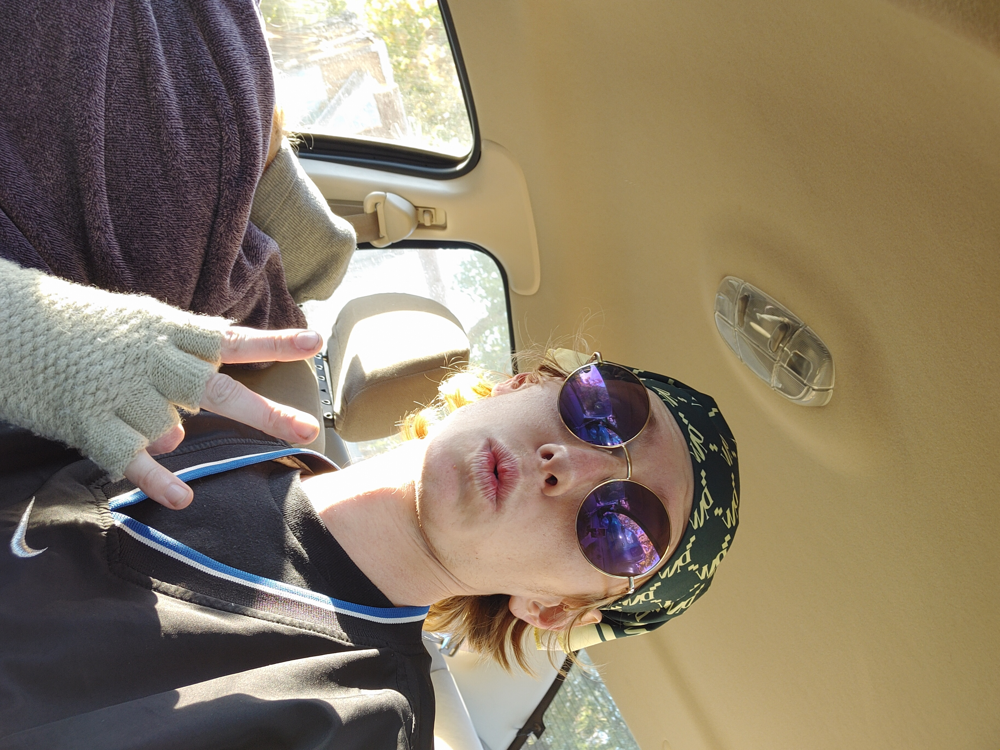

Triple 7 Blessed is a studio, aimed with changing the industry, the culture, and people's way of life, leading the charge on all fronts to free people through the music. Originally based in Minneapolis, Triple 7 Blessed considers itself a national organization. We all about that luh, so don't kill our vibe, that way we can write one for y'all. All credit to God. We His Royalty. Free your mind, dawg...
Blessed Chitlins
Don Smón (Simon Phillip Harms) is a Minneapolis based artist interested in making music, fashion and designing websites. Don Smón considers themselves a bit of a world citizen, growing up in both the United States and Indonesia. With nowhere specific to call home Don Smón uses their art to explore culture and origin.

Conflicted Angel (Oliver Krause) is a Minneapolis based artist, designing fashion and creating physical media art . Conflicted Angel uses many different styles in their art, and is inspired by @babies_teeth, @teethmeat, @golfwang, @soto.sosa, and @blohsh. Conflicted Angel is one of the founding members of Triple 7 Blessed, and is immensely skilled at creating an entire environment with their art.